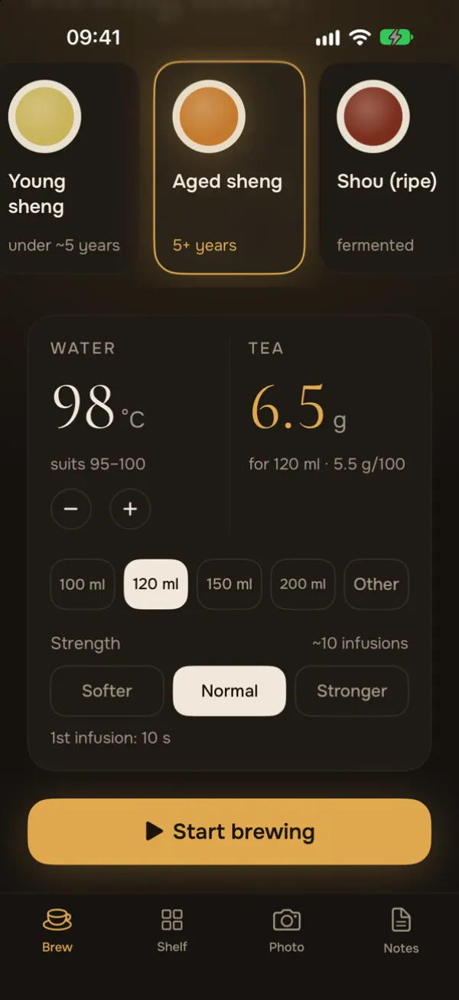
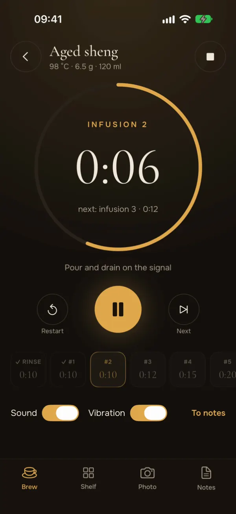
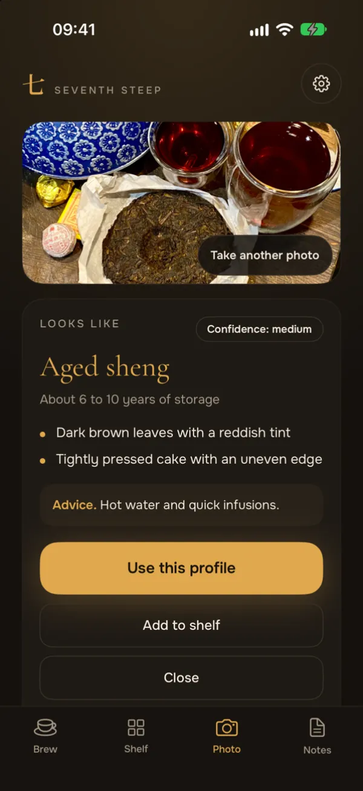
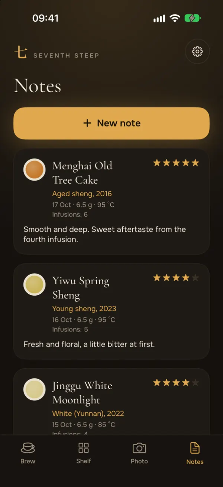

Grams and temperature
Pick a tea and a vessel. The app works out the grams of leaf and shows the water temperature in °C or °F.
Gongfu tea timer
Seventh Steep gives you the grams and the water temperature for your tea and vessel, then times the rinse and every infusion.
Free. Optional Plus for more photo identifications.

What it does
Made for evening sessions: dark screens, big numbers, no clutter.

Pick a tea and a vessel. The app works out the grams of leaf and shows the water temperature in °C or °F.
A ring timer runs the rinse and each infusion. A bell and a vibration tell you when to pour.

Take one to three photos of the tea or its wrapper. The answer is an estimate, not a guarantee.

Keep a shelf of your teas and write down each session. Your shelf and notes stay on your phone.
Swipe to see more screens.
Five teas
The app starts from these numbers. You can change the temperature, the vessel and the strength. Tap a tea with a guide to read more.
The timer, the shelf and the notes are free. Every month you get some free photo identifications.
An optional subscription that gives you more photo identifications. The price and the limits are shown in the app before you buy.
No accounts, no ads, no tracking. Photos go to an AI service only after you agree. Privacy policy.
In English, Ukrainian, Simplified and Traditional Chinese.